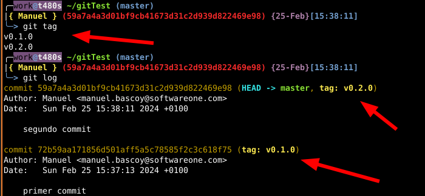

Como utilizar git tag para aplicar una etiqueta sobre un commit.
En ocasiones esto se puede utilizar en una pipeline para disparar el proceso de despliegue
Para aplicar un tag al commit actual lo hacemos de la siguiente manera:
git tag -a v0.1.0 -m "Version 0.1.0"
Si queremos borrar el tag sería:
git tag -d v0.1.0
Para listar los tags creados lo hacemos con:
git tag
Tambien podemos hacer un git log y ver a que commits están asociados los tags:
Cuando subimos una rama a un repositorio remoto los tags no se suben, tenemos que hacerlo de manera explicita.
Lo haríamos de la siguiente manera:
git push origin v0.1.0
Git | tag